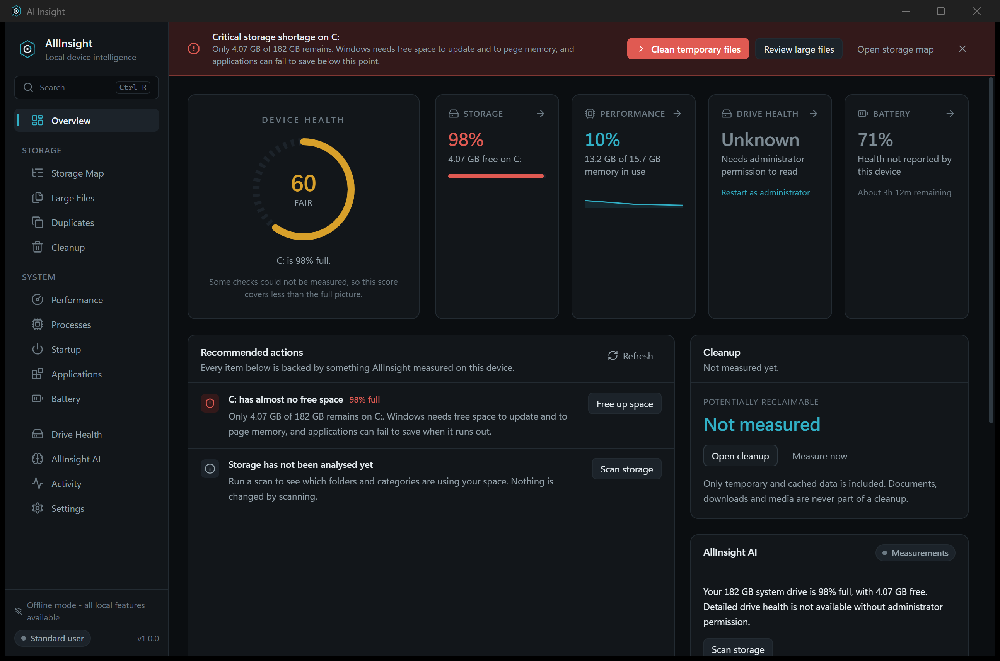

Overview
A device health score with its reasons, four vital signs, ranked recommendations, and a plain-language summary.
Windows 10 · 11 · v1.0.0
AllInsight analyses storage, monitors device health, finds what is genuinely safe to clean, and explains what it finds. All of it happens on the machine it is installed on.
The part everyone else gets wrong
AllInsight contains no code that makes an outbound network request. There is no update checker, no analytics, no cloud service. The only HTTP client in the binary has TLS compiled out, because loopback is the only address it is ever pointed at.
Disconnect the machine and every screen behaves identically.
127.0.0.1Work happens on the left. Nothing reaches the right.
Fourteen screens
There are no decorative controls. Every switch does something, and where a value cannot be measured AllInsight says Unknown rather than guessing.
A device health score with its reasons, four vital signs, ranked recommendations, and a plain-language summary.
A squarified treemap of one folder level at a time, plus a category breakdown of everything scanned.
The biggest files on the device, with a risk classification and a route to the Recycle Bin.
Files with identical contents — size grouping, then partial hash, then full BLAKE3. Never by name.
Thirteen typed categories, a dry run, and a confirmation that states what will and will not be touched.
Live CPU, memory, GPU, disk and network with ten minutes of history.
Publisher, resource use, and an End button that refuses on the processes Windows needs.
Entries from the Run keys and Startup folders, toggled the same way Task Manager does it.
Installed applications with measured sizes, uninstalled through the vendor's own uninstaller.
Charge, design capacity, cycle count and health — shown only where the hardware actually reports them.
Model, bus, wear, temperature, power-on hours and error counts, with Unknown where the drive is silent.
A local assistant, optional, that explains measurements and cannot act on anything.
Cleanup history and an event log, recorded as totals rather than file lists.
Eleven sections, including the real protected-path list read back from the backend.
The safety model
The frontend never sends a path to a destructive command. It sends a
category variant or an opaque candidate id the backend issued. Removal
requires a ValidatedPath — a token only the deletion guard can
construct — and possession of that token is the proof the checks
ran. Each step ends the sequence on failure, and steps four through eight
run at the moment of deletion rather than when the preview was built.
Waiting
The real thing

Optional, and genuinely local
Every insight, recommendation and score comes from a deterministic generator that needs no model. A model only adds conversation. AllInsight never downloads one — there is no download code in the binary. You point it at a GGUF file, it validates the header, and llama.cpp runs as a separate process bound to loopback.
Works fully without any of this.
Download
Registers the uninstaller and the Start menu entry, and adds the Edge WebView2 runtime if it is missing.
PortableSelf-contained apart from WebView2. Copy it to a machine and run it — nothing is registered.
The installer is unsigned, so SmartScreen shows “Windows protected your PC.” Choose More info, then Run anyway. Signing requires a code-signing certificate, which is a purchase rather than a build step — so the honest fix is to let you verify the file yourself.
— publish after the release build —
— publish after the release build —
Verify before running:
Get-FileHash .\AllInsight_1.0.0_x64-setup.exe -Algorithm SHA256